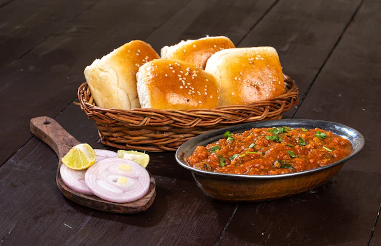

Introduction
Pav Bhaji is a popular Indian street food that consists of a spicy vegetable curry (bhaji) served with soft
buttered bread rolls (pav). It's a flavorful and satisfying dish that is loved by people of all ages.
Ingredients
- 3 large potatoes, boiled and mashed
- 1 cup cauliflower, finely chopped
- 1 cup green peas
- 1/2 cup carrots, finely chopped
- 1/2 cup bell peppers, finely chopped
- 1 large onion, finely chopped
- 2 tomatoes, finely chopped
- 4 cloves garlic, minced
- 1-inch ginger, grated
- 2 tablespoons pav bhaji masala
- 1 teaspoon red chili powder
- 1/2 teaspoon turmeric powder
- 1/2 teaspoon cumin seeds
- Salt to taste
- Butter for toasting pav
Instructions
- Boil and mash the potatoes. Steam cauliflower, peas, carrots, and bell peppers until soft.
- Heat oil in a pan, add cumin seeds, minced garlic, and grated ginger. Sauté until fragrant.
- Add chopped onions and cook until golden brown. Add chopped tomatoes and cook until they become soft.
- Add pav bhaji masala, red chili powder, turmeric powder, and salt. Mix well.
- Add boiled and mashed potatoes along with the steamed vegetables. Mash everything together.
- Simmer the bhaji on low heat until the flavors meld. Add water if needed to achieve the desired
consistency.
- For pav, slit the rolls, spread butter, and toast on a hot griddle until golden brown.
- Serve hot bhaji with buttered pav, garnished with chopped onions, cilantro, and a lemon wedge.